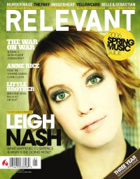

CMnexus
:
Contemporary Christian culture, music, and media.
Browse Magazines
Browse Profiles
cmnexus.org
CM
nexus
→
Profiles
→
D
→
Cara Davis
Cara Davis
Writing credits listing
May 2004 in
Relevant
#8
Number One Fan
-
Compromises

Mar 2006 in
Relevant
#19
"A Dream Deferred"
Leigh Nash
Jan 2007 in
Relevant
#24
"Norma Jean Redeemed"
Norma Jean
Mar 2007 in
Relevant
#25
"Jill Phillips, 30"
Jill Phillips
May 2007 in
Relevant
#26
"Dreaming One Note At A Time"
Chrisette Michele
Jul 2007 in
Relevant
#27
"Capturing Hope In The Dark"
Patty Griffin
CMnexus
(noun)
The magazine index
of modern music
and Christianity
© 2011 CMnexus. Last updated September 2019.
Contact:
Rants and other correspondence to:
editor -AT- cmnexus
-DØT- org
About